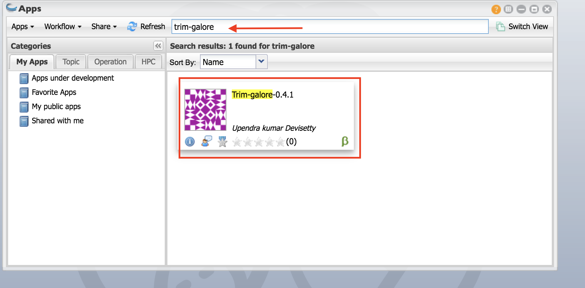
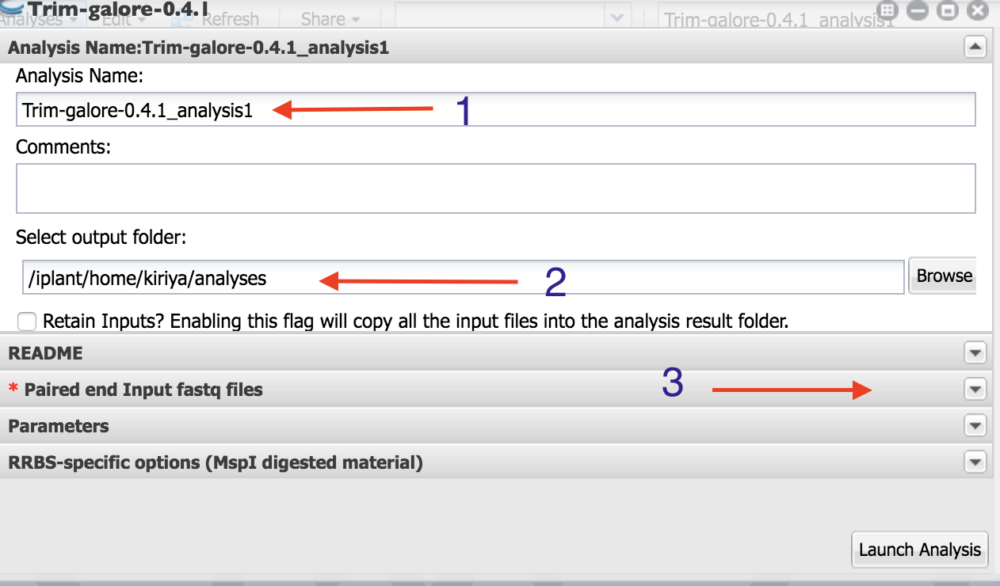
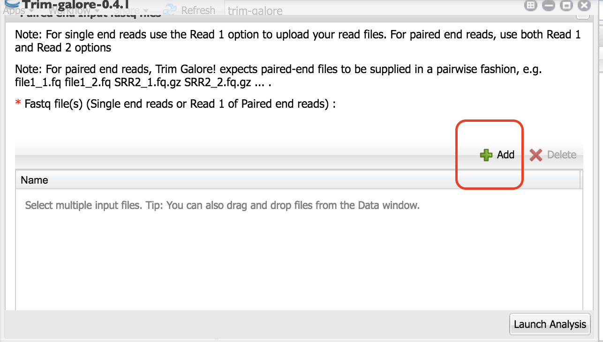
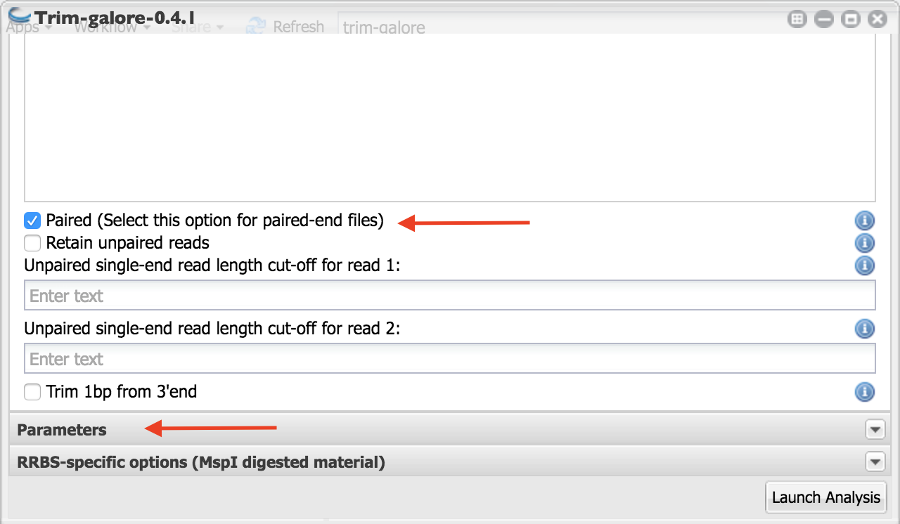
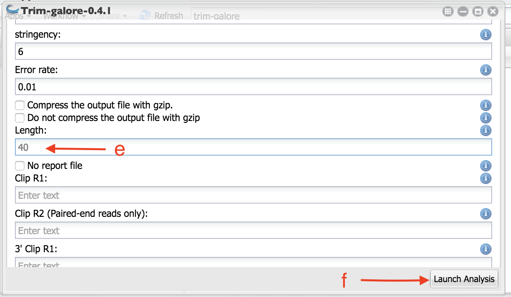

Adapter and quality trimming using trim-galore¶
We are going to use Trim-galore to trim adapters, and poor quality bases. This tool has several advantages. It allows selection multiple files. You can also select both forward and reverse reads. If you want to read more about Trim-galore, please visit their website. Also, Trim-galore is a wrapper for Cutadapt , which is the actual tool that performs the trimming.
Please follow the tutorial carefully.
Step 1: Launching Trim-galore¶
- Click on App.
- In the finder window type “trim-galore”
Select “trim-galore-0.4.1”.

Step 2: Selecting output folder¶
As indicated in the figure: 1. Name your analysis as you want
- Select the output folder where your analysis is going to be
Click on “Paired end Input fastq files”

Step 3: Selecting input files¶
Click on the Green “+” sign.

2. Navigate to the folder where your samples are located. Select only the first read files. Click “OK”.

You should all your first read files selected like this.

Scroll down and click on the “+” below “Fastq file(s) (Read 2 of paired end reads):”

Select the read two files as above. You will see them in the box as in the figure below.

6. Scroll down and check box beside “Paired (Select this option for paired-end files)” to indicate these are paired end reads.
very important

- Click on “Parameters” as indicated in the above figure.
- Set the parameters as indicated in the figure:
- Use Fred 20 as quality trimming cut off (this is the default).
- Copy and paste the following adapter sequence for in the box below “Adapter sequence to be trimmed:”
AATGATACGGCGA
- Copy and paste the following adapter sequence for in the box below “Adapter2”
CAAGCAGAAGACGG
Set the stringency to 6.

e. Scroll down and set the length as 40. Any sequence become shorter than this length during the trimming will be discarded. | f. Launch the analysis.
